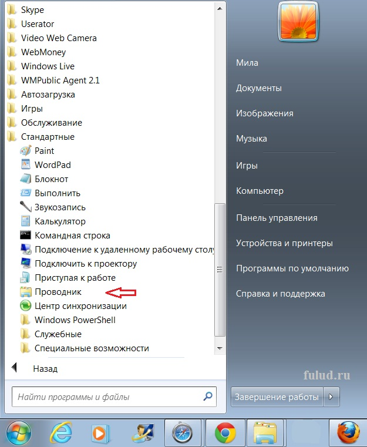
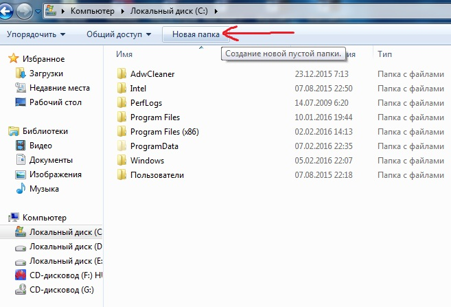
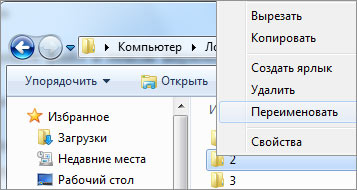

Типовые операции с файлами и папками
Программа Проводник позволяет пользователю создавать и удалять файлы и каталоги (папки), копировать и переносить их с одного носителя на другой, а также переименовывать файлы и папки. Действия по копированию, переносу и удалению файлов аналогичны действиям по копированию, переносу и удалению текстовых или графических фрагментов.

После копирования получают два одинаковых файла. В папке источнике нужно выбрать объект для копирования и в контекстном меню объекта выполнить команды Правка →Копировать . После этого следует выбрать папку-приемник и в ее контекстном меню выполнить команды Правка →Вставить . В качестве источника и приемника может быть выбрана одна и та же папка.
Действия по перемещению файла (папки) аналогичны действиям по копированию. Сначала в папке-источнике нужно выбрать объект для перемещения и в контекстном меню объекта выполнить команды Правка →Вырезать . После этого выбирается папка-приемник и в контекстном меню папки-приемника выполняется команда Правка →Вставить .
Ненужные файлы и папки могут быть удалены. Для этого их выделяют, а затем нажимают клавишу Delеte на клавиатуре или выполняют команду Файл → →Удалить . После удаления объекты обычно помещаются в Корзину. Корзина предназначена для временного хранения удаленных объектов. Удаленные из Корзины объекты восстановить с помощью операционной системы невозможно.
Внутри открытой папки можно создать новую папку. Для этого нужно нажать кнопку Новая папка в меню окна Проводника. Появится папка с именем «Новая папка» . Это имя можно поменять на иное.

Чтобы переименовать файл или папку, можно воспользоваться соответствующим пунктом контекстного меню файла или папки.
